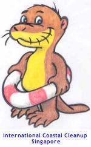
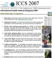

International
Coastal Cleanup, Singapore
International Coastal Cleanup, Singapore

Coordinated by:

Guidelines for Organisers Presentation powerpoints Data Card and Submission Sheet Other resources For other resources such as posters, articles, audio, video and webpages, please see Articles and Links.
Please read this carefully before the discussion with your Zone Captain.
 pdf version - link
pdf version - link
Powerpoints contains slides organisers might find useful when briefing participants. It includes some background, guidelines for organisers and a briefing for participants.
 ICCS Briefing powerpoint (August 2007; 10.3MB zipped file) - link - view on web
ICCS Briefing powerpoint (August 2007; 10.3MB zipped file) - link - view on web
What typically happens on the cleanup day and how to prepare? ICCS Briefing powerpoints for organisers, (ver 1.0, 2008) Click to download all
ICCS Briefing powerpoints for organisers, (ver 1.0, 2008) Click to download all

 pdf of Data Card (updated for 2008) - link
pdf of Data Card (updated for 2008) - link
Print one for each group of three volunteer participants Data Submission Form (MS-Excel file) (updated for 2008)
Data Submission Form (MS-Excel file) (updated for 2008)
For Organisers to key in collated data and submit to the Data Manager - link.